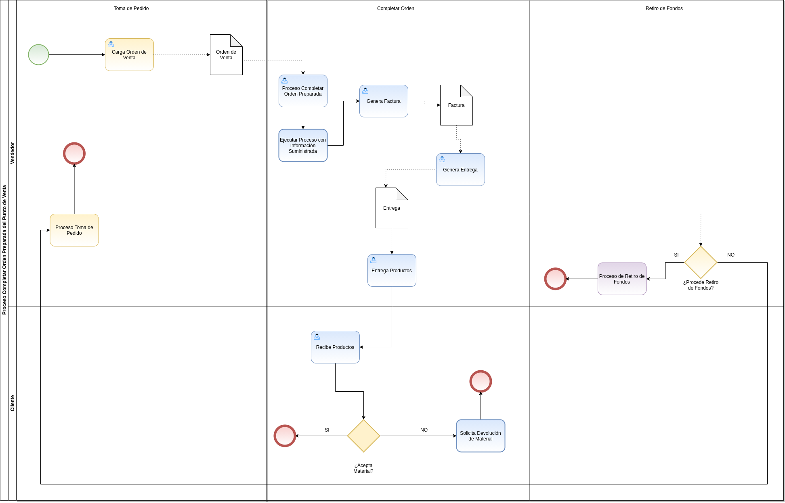

Completar Orden Preparada
El proceso completar orden preparada permite completar la orden de venta generando automáticamente en estado “Completo”, su respectiva factura y entrega. Esta opción se utiliza luego de concluir con la toma de pedido en la ventana “Punto de Venta”, permitiendo realizar el proceso de venta sin un cobro.
Para mejor referencia de lo explicado anteriormente, se presenta a continuación el diagrama del proceso “Completar Orden Preparada”, con la finalidad dar a conocer el comportamiento de ADempiere ante dicho proceso.

Imagen 1. Diagrama de Completar Orden Preparada POS
Para ejecutar correctamente el proceso completar orden preparada, se debe realizar el siguiente procedimiento.
Ejecución del Proceso
Ubique y seleccione en el menú de ADempiere, la carpeta “Gestión de Ventas”, luego seleccione la carpeta “Órdenes de Venta”, por último seleccione la carpeta “Punto de Venta”. Para finalizar, seleccione la ventana “Punto de Venta”.
Imagen 2. Menú de ADempiere

La interfaz de la ventana “Punto de Venta”, se encuentra definida de forma específica en el documento Interfaz de Punto de Venta, elaborado por ERPyA. Realice cada uno de los procesos explicados a continuación para obtener un resultado exitoso en la completación de una orden preparada por el punto de venta.
Luego de realizar desde el punto de venta la toma de pedido, seleccione la opción “Completar Orden Preparada”, ubicada en el menú desplegado por el icono “Proceso” de la barra de herramientas de la ventana “Punto de Venta”, explicada en el documento Barra de Herramientas del Punto de Venta elaborado por ERPyA.
Imagen 3. Opción Completar Orden Preparada

Consulta de Documentos Generados
En la ventana “Orden Venta”, se puede visualizar el registro de la orden de venta con ayuda del número de documento “OPOS-58” mostrado en el grupo de campos Información de la Orden, de la ventana “Punto de Venta”.
Imagen 4. Consulta de Orden de Venta Generada

Al seleccionar en el registro de la orden de venta generada, el icono “Visualiza Detalle” ubicado en la barra de herramientas de ADempiere y la opción “Documentos por Cobrar”, ADempiere muestra el registro de la factura generada desde el punto de ventan, en la ventana “Documentos por Cobrar”.
Imagen 5. Consulta de Factura Generada

Al seleccionar la pestaña “Facturas Pagadas”, de la ventana “Documentos por Cobrar”, podrá visualizar que efectivamente no fue creado ni asociado a la factura ningún tipo de pago.
Imagen 6. Consulta de Pagos Asignados a la Factura Generada

Adicional a ello, se genera en la ventana “Entrega (Cliente)”, el documento de entrega de los productos cargados a la orden de venta desde el punto de venta. Este se puede visualizar seleccionando el icono “Visualiza Detalle” ubicado en la barra de herramientas de ADempiere y la opción “Entregas (Cliente)”.
Imagen 7. Consulta de Entrega Generada